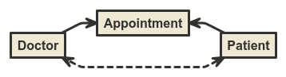

You can specify some options in the query string:
properties: if false, it hides the properties of each nodeexclude: it hides the specified nodes and the relations connected with them (e.g. exclude=User,defensible,SoldierLink)You can download the source code of the diagram as text file by using the link in the index page. It reflects the filters applied in the URL. Note that if you go to the /source URI, you get the source code without any filters.
You can download the diagram as image by right clicking on the canvas and selecting the appropriate option.
The relations between the models are represented as follows.
A one-to-one relation can be enstablished with a hasOne relation. For instance, a supplier has one account, and an account can belongs to a supplier. If the belongsTo relation from the account to the supplier is defined, it is considered as a logical reflection of the hasOne, then it is discarded.
A one-to-many relation can be enstablished with a hasMany or a belongsTo relation. For instance, a customer has many order, and an order can belongs to a customer. If the belongsTo relation from the order to the customer is defined and there is a hasMany relation, then it is considered as a logical reflectoin of the hasMany, then it is discarded. But, there is no hasMany invers relation, then it is considered and it is drawn like his plural reflection. In practice, this means that the hasMany and the belongsTo (with no invers hasOne) are diplayed in the same way.
A many-to-many relation can be enstablished with a hasAndBelongsToMany or a hasManyThrough relation. For instance, a doctor has and belongs to many patients and vice versa.

In the same way, a doctor and a patient can be linked by the appointment, that is the "through" model.
